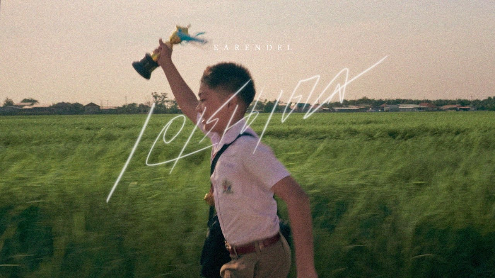

แฟนใหม่เธอใช้ไม่ได้ - Bad New Boy
by Pae Arak
It's about an ex-lover's feelings when his ex-lover's new boyfriend doesn't seem right and he doesn't want his ex-lover to leave him with a new boyfriend who is not suitable.
เอเรนเดล-EARENDEL
by Anatomy Rabbit
It's about valuing and appreciating the people who love you, even when you're feeling hurt and broken, because these loved ones might not always be there.
สวยขยี้ใจ-Heartbreakingly beautiful
by Book Suphakan
It's about a young man falls in love with a beautiful woman at first sight, comparing the feeling to being "heart-broken" by her beauty.
สาวสวนแตง
by Surapol Sombatjaraun
The song tells the story of a young woman from Suphan Buri who was chosen as the "Rising Star of the Melon Garden", which led to her fame and invitation to enter the entertainment industry in Bangkok. However, the song's lyrics also convey her homesickness, with the songwriter wanting her to return to her hometown of Suphan Buri.
รักข้ามคลอง love cross river
by Got jakkapan
It is a love story that requires patience and waiting. The man wants to cross the canal to find his lover, which is like an obstacle in love life.